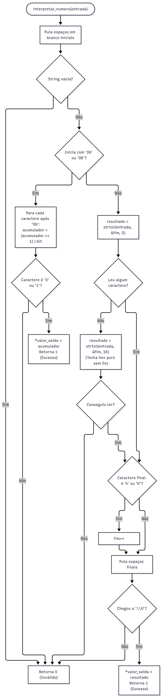
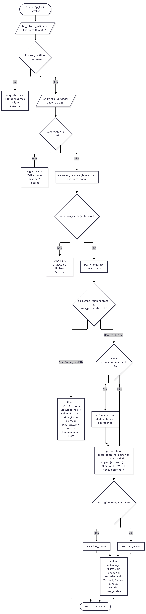
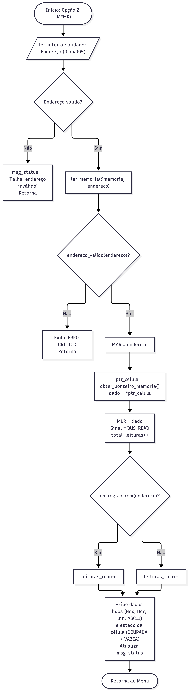
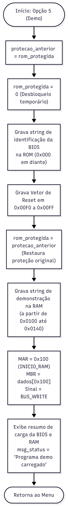
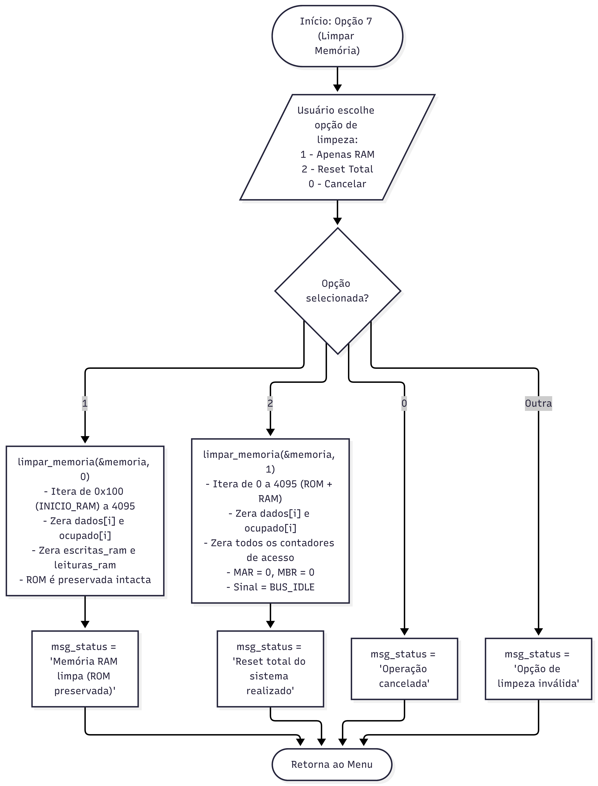
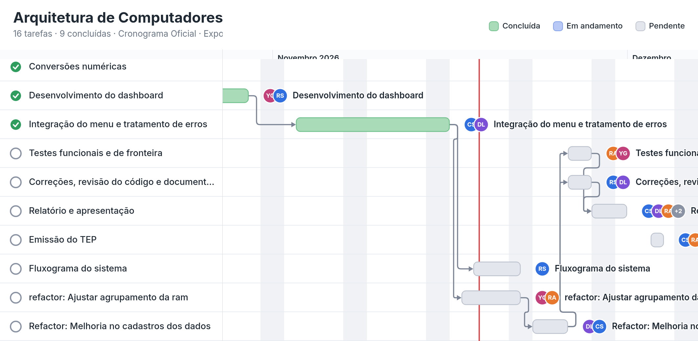

Apresentação de Resultados de Execução
Simulador de Memória RAM / ROM
Demonstração prática de barramentos, operações fundamentais e arquitetura de memória em Linguagem C.
Equipe de Desenvolvimento
Caio Ferreira Sousa • Danilo Nava Soares Lima • Raynara Ribeiro Alves
Rhuã Yuri Nascimento Sardinha • Yuri Aguiar Gonçalves
Universidade Federal do Maranhão
São Luís • 2026
Estrutura do Sistema
Arquitetura Integrada e Subsistema
Modelo Von Neumann com 4 KB de espaço endereçável
- Espaço Total: 4096 Bytes (12 bits)
- Segmentação: 256 B de ROM e 3840 B de RAM
- Registradores: MAR (Endereço) e MBR (Dado)
-
Controle: Sinais
MEMR,MEMWe MPU

Ampliar
Fonte: Autoria própria.
Tratamento de Dados
Analisador Léxico Multi-base
Flexibilidade para manipulação direta de diferentes bases
- Bases: Decimal, Hexadecimal e Binário
-
Prefixos: Suporte a
0x...,...he0b... - Limites: MAR (12 bits) e MBR (8 bits)
- Resiliência: Prevenção de falhas de buffer

Ampliar
Fonte: Autoria própria.
Operação de Escrita
Ciclo MEMW e Proteção de ROM
Simulação física do ciclo de escrita com proteção de hardware
- Barramento: MAR (Endereço) ← MBR (Dado)
- Proteção MPU: Bloqueio de escrita na ROM
-
Sinal de Falha: Emissão de
BUS_PROT_FAULT - Acesso Físico: Ponteiro direto e sobrescrita

Ampliar
Fonte: Autoria própria.
Operação de Leitura
Ciclo MEMR e Trânsito de Dados
Recuperação de dados e consulta imediata do estado da célula
- Endereçamento: MAR posiciona a célula
- Captura Síncrona: Dado transferido ao MBR
-
Linha de Controle: Sinal
BUS_READativo - Decodificação: Hex, Dec, Bin e caractere ASCII

Ampliar
Fonte: Autoria própria.
Inicialização e Firmware
Gravação de ROM e Bootloader
Simulação de carga de fábrica com proteção pós-escrita
- Desbloqueio: Desativação temporária da MPU
- Firmware BIOS: Assinatura de inicialização
-
Vetor de Reset: Salto para a RAM (
0x100) - Segurança: Travamento automático pós-carga

Ampliar
Fonte: Autoria própria.
Gestão de Estado
Higienização e Reset do Sistema
Diferenciação clara entre dados voláteis e firmware permanente
- Limpeza da RAM: Zera dados e preserva BIOS
- Reset a Frio: Zera os 4096 bytes do sistema
-
Hardware: MAR e MBR zerados para
BUS_IDLE - Telemetria: Reinicialização das métricas

Ampliar
Fonte: Autoria própria.
Proposta de Melhoria
Segmentação da RAM por Tipologia
Evolução planejada: Particionamento dos 3840 B de RAM em espaços dedicados
- TEXT (0x100–0x3FF): Código e instruções
- DATA (0x400–0x7FF): Variáveis globais e strings
- HEAP (0x800–0xBFF): Alocação dinâmica (*Bottom-Up*)
- STACK (0xC00–0xFFF): Pilha de execução (*Top-Down*)
Layout de Memória Segmentado
4096 Bytes
0xC00 - 0xFFF
STACK (Pilha de Execução)
1024 B
↓ Crescimento da Pilha (Top-Down)
0x800 - 0xBFF
HEAP (Dados Dinâmicos)
1024 B
↑ Crescimento do Heap (Bottom-Up)
0x400 - 0x7FF
DATA (Variáveis e Strings)
1024 B
0x100 - 0x3FF
TEXT (Código / Instruções)
768 B
0x000 - 0x0FF
ROM (BIOS / Bootloader)
256 B
Fonte: Autoria própria (Planejamento Arquitetural).
Cronograma de Execução
Andamento da Fase Final
Situação em 18/11/2026: 9 tarefas concluídas e reta final de validação
- Marco 18/11: 9 tarefas centrais concluídas
- Entregas Atuais: Fluxogramas e apresentação
- Reta Final: Testes de fronteira e emissão do TEP
- Backlog: Refatoração do mapa de memória

Ampliar
Fonte: Autoria própria (Exportado do ClickUp em 18/11/2026).
Síntese dos Resultados
Conclusões e Entregas Consolidadas
Superação do escopo inicial com implementação de arquitetura realista
-
Fidelidade Arquitetural: 4 KB com MAR/MBR e MPU em ROM
-
Robustez Operacional: Multi-base e proteção ativa de memória
-
Visibilidade Plena: Telemetria em tempo real e Hex Dump com ASCII
-
Objetivo Alcançado: Prática real de Arquitetura de Computadores